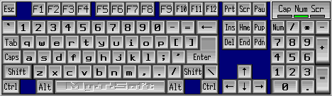

| My-T-Soft®: for Windows; Indestructible Keyboards and Indispensable Utilities; Version 1.80; User's Guide | ||
|---|---|---|
| Prev | Chapter 3. My-T-Soft Panels | Next |

When you click any of the keys on the Keyboard (Alpha) Panel, Edit Panel, and Numeric Panel, they will respond exactly like the corresponding keystroke on a physical keyboard. In order to type with My-T-Soft, another window must be the Active Application and have the input focus. Windows typically indicate where typed characters will be displayed by the Caret, or text cursor. This usually is displayed as a flashing bar, although other shapes may be used.
To use combination keys i.e. Shift, Alt, or Ctrl just click on that key. Your cursor will change and My-T-Soft will display which key is currently locked. For example, if you have clicked on the Alt key, the cursor will have the word Alt visible. The lock will be released after you click on a normal key, i.e. A-Z keys. You may carry more than one combination key at a time.
On some international layouts, the right-most Alt key is treated as the "AltGr" key. When pressed, this key acts as if both the Ctrl key and the Alt key have been pressed, and the cursor will indicate this combination state. This additional state (e.g. Ctrl & Alt keys both pressed) allows access to additional letters and keys.
There are numerous layouts available for the keyboard panel, accessible through My-T-Soft Setup, Keyboards - See My-T-Soft Setup Help for information on available panels and how to change the current keyboard layout.
You may also select from some pre-defined (included) Build-A-Board custom layouts. To create your own layouts, you will need IMG's Build-A-Board.
Keys may be programmed with commands or Macros. See Key Options in Setup and reference the My-T-Soft Developer's Kit for more information.